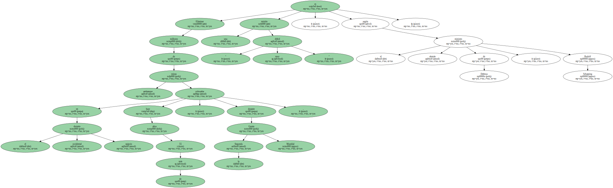
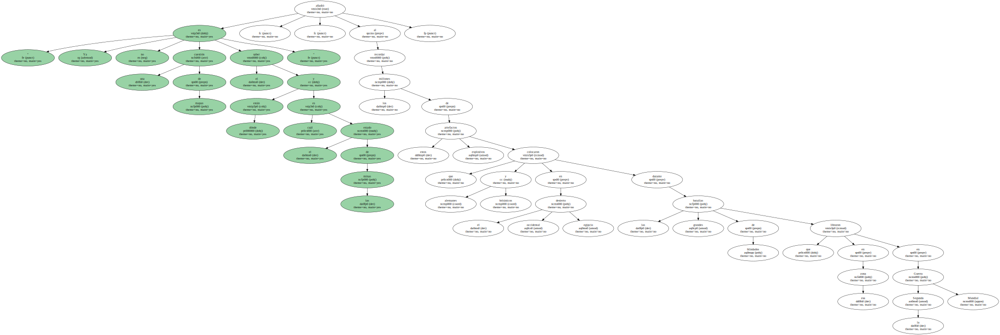
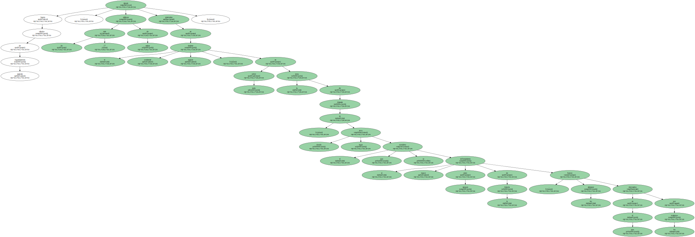
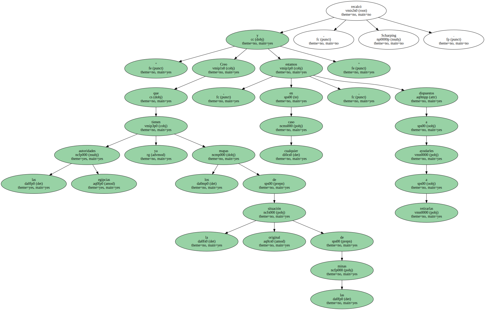
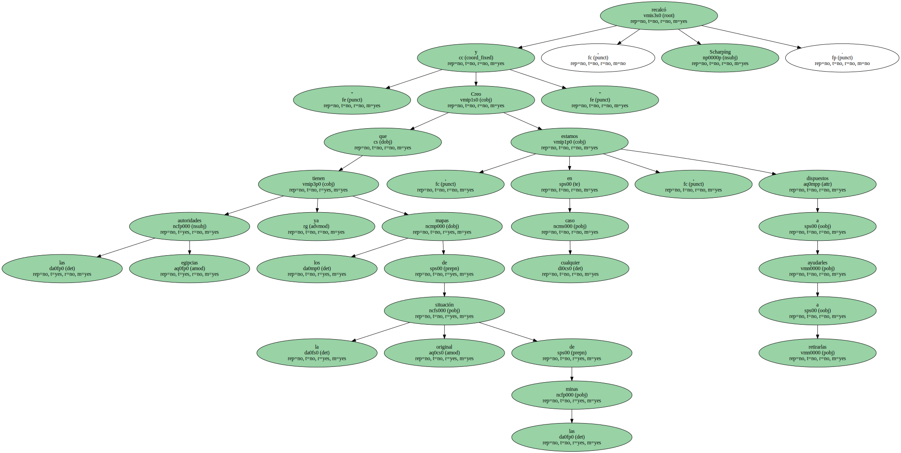
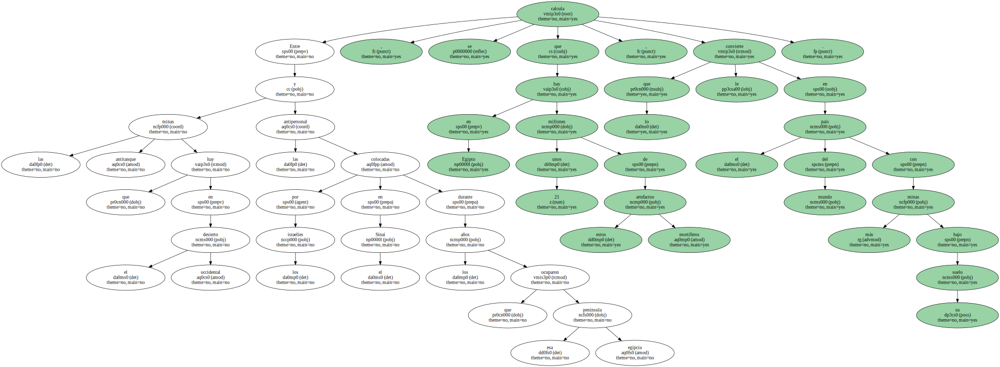
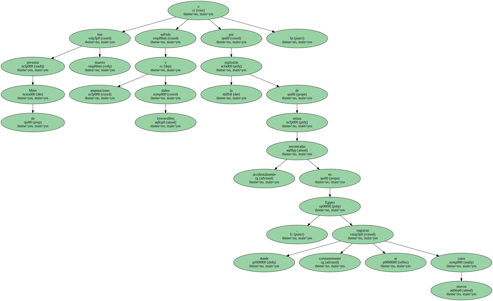
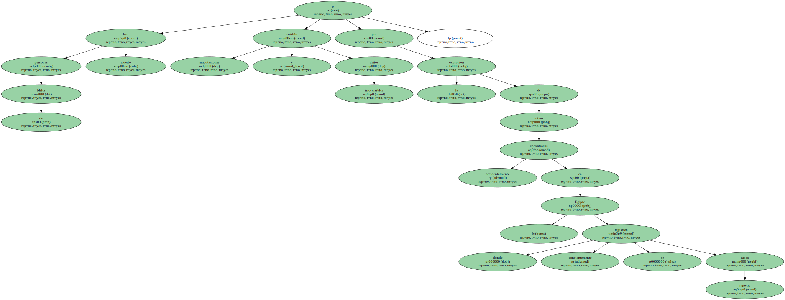

Eliminar millones de minas antitanque colocadas en el desierto occidental egipcio hace más de 55 años , durante la Segunda Guerra Mundial , es una misión " muy difícil " , según el ministro alemán de Defensa , Rudolf Scharping.
En unas declaraciones que hoy miércoles publica el diario egipcio " Al Ajbar " , Scharping , que el martes finalizó una visita a Egipto , recordó que " el movimiento de las arenas en este periodo hace difícil saber dónde están enterradas las minas ".

" Ya no es una cuestión de mapas el saber dónde están y cuál es el estado de las minas " , añadió , al recordar los millones de estos artefactos explosivos que alemanes y británicos colocaron en el desierto occidental egipcio durante las grandes batallas de blindados que libraron en esa zona en la Segunda Guerra Mundial.
Según cálculos de organizaciones egipcias , más de 17 millones de minas siguen enterradas en el desierto occidental egipcio , sobre todo en la zona de El Alamein , donde tuvo lugar el que se considera el mayor enfrentamiento entre tanques de la historia , en el que los alemanes fueron derrotados por los británicos.
Según cálculos de organizaciones egipcias , más de 17 millones de minas siguen enterradas en el desierto occidental egipcio , sobre todo en la zona de El Alamein , donde tuvo lugar el que se considera el mayor enfrentamiento entre tanques de la historia , en el que los alemanes fueron derrotados por los británicos.
" Creo que las autoridades egipcias tienen ya los mapas de la situación original de las minas y , en cualquier caso , estamos dispuestos a ayudarles a retirarlas " , recalcó Scharpíng.
Egipto se ha quejado reiteradamente de la poca colaboración de Alemania y del Reino Unido para retirar estas minas , de las que no se sabe la situación exacta ni la profundidad a que pueden encontrarse bajo la superficie de la tierra debido al movimiento de las arenas del desierto.
Entre las minas antitanque que hay en el desierto occidental y las antipersonal colocadas por los israelíes en el Sinaí durante los años que ocuparon esa península egipcia , se calcula que en Egipto hay unos 21 millones de estos mortíferos artefactos , lo que le convierte en el país del mundo con más minas bajo su suelo.
Miles de personas han muerto o sufrido amputaciones y daños irreversibles por la explosión de minas encontradas accidentalmente en Egipto , donde constantemente se registran nuevos casos.
